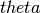
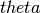

Exercise 3: Bayesian Inference¶
Reminder: The Bayesian method starts by defining the posterior in the model parameter
where is the posterior for the model parameters  , given data
, given data  ,
is the probability to observe data given parameters ,
is the prior for the model parameters, and
,
is the probability to observe data given parameters ,
is the prior for the model parameters, and  is a normalization constant, ensuring that the right-hand-side
of this definition is actually a properly normalized probability density.
is a normalization constant, ensuring that the right-hand-side
of this definition is actually a properly normalized probability density.
In general, one then constructs the marginal posterior by “integrating out” all nuisance parameters.
In this exercise, we will construct the (marginal) posterior for the counting experiment and the shape model, derive intervals from it, and make a prior sensitivity analysis.
3.a. Posterior for the counting experiment As in earlier exercises, we consider a counting experiment where the number of observed events follows a Poisson distribution with mean s+b with known b; s is the only model parameter. For now, we use a flat prior for s on the interval .
Note
You might argue that a “flat” prior for s on an infinite interval is not well-defined. You are right, but such an “improper prior” is usually not a problem as the posterior can still be normalized.
Use the prepared code (and try to understand it) in ex3.py to plot the posterior for b=5.2 and nobs=6.
Question i: At which value of s is the maximum posterior?
Adding an uncertainty on the background b is implemented by using a normal prior for b (which is now a nuisance parameter in the statistical model) with mean b0 wand width delta_b. The marginal posterior in s is given by “integrating out” the nuisance parameter:
where the posterior is evaluated for fixed b – which has already been implemented.
This integration is implemented in counting_posterior_unc; try to understand how it works.
Question ii: Using an uncertainty of 50%, delta_b = 2.6, how does the posterior shape change qualitatively; where is the maximum posterior value now?
3.b. Posterior for the shape model (using theta) Use the method get_posterior which calls theta to get the marginal posterior for the signal strength parameter for the shape model. Make another plot for the posterior if including a 10% rate uncertainty on the background and the shape uncertainty.
Question: How does the posterior change qualitatively when including the uncertainties?
Note
In a realistic model with uncertainties, the number of nuisance parameters can easily reach 20, in some cases even several hundred. In this case, the integration over the nuisance parameter to get the marginal posterior in the signal cross section required methods which can handle such large dimensions; using the most straight-forward approach of evaluating the function in a grid (i.e., generalizing the method in 3.a. in counting_posterior_unc) would require a huge number of function evaluations and is not useful any more. Theta and other packages use the Metroplis Markov-Chain Monte-Carlo algorithm for this integration, which performs well in many dimensions.
3.c. Limits from posteriors
Having calculated the (marginal) posteriors in 3.a. and 3.b., we can now proceed to derive limits from these posteriors: The 95% C.L. upper
limit on  is given by the value such that
is given by the value such that
where is the marginal posterior for (note that for the counting experiment, and s are used as synonyms here).
Implement the method get95up which determines the 95% C.L. upper limit, given the (x,y) posterior data in the format produced in exercises 3.a. and 3.b. and apply it to the posteriors for the counting and shape model to answer the following questions:
- What are the Bayesian 95% C.L. upper limits for the example in 3.a.? (i.e. b=5.2, and nobs=6; without and with uncertainty on b)?
- What is the Bayesian 95% C.L. upper limit for a “no-background” experiment b=0 with nobs=0? Compare it to the frequentist limit from question 2.a.iv.
Note
Make sure to use a large enough range for s (as get95up assumes that the posterior vanishes outside the range); also use a large number of scan points if you want an accurate result.
Discussion: In question ii., you will notice that the frequentist limit and the Bayesian limit coincide in the considered (background-free, n=0) case. However, this does not generalize: As you can see for b=5.2, n=6, the limits do not coincide.
3.d. Prior Sensitivity Analysis
One of the criticisms on the Bayesian method is the subjectiveness (arbitrariness) of the prior, especially for the prior of the parameter of interest (here: s or  ).
While one usually tries to use an “uninformed” prior which does not “prefer” apriori any particular values, this is still hard in practice: we used a flat prior in s in 3.a., but
we could also have used a prior that is flat in some other variable related to s, which could correspond to a prior proportional to s (again, this is an improper prior).
).
While one usually tries to use an “uninformed” prior which does not “prefer” apriori any particular values, this is still hard in practice: we used a flat prior in s in 3.a., but
we could also have used a prior that is flat in some other variable related to s, which could correspond to a prior proportional to s (again, this is an improper prior).
By multiplying the posterior point-wise with the new (improper) prior , calculate the updated posterior for the counting experiment with b=5.2, n=6; this is implemented in the method apply_prior.
Question: How does the posterior (qualitatively) change when applying this prior; what is the new limit?